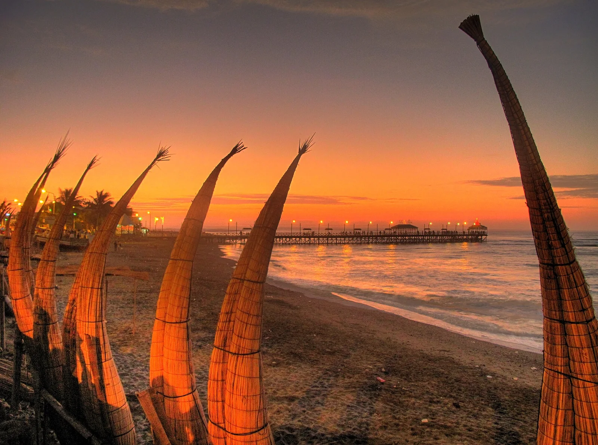

Huanchaco
Pérou · surf, bodyboard, paddle

Un village de pêcheurs où l’on rame encore sur des caballitos de totora, embarcations de roseau utilisées depuis des siècles. Longue gauche douce, idéale pour progresser.
- Lieu
- Pérou
- Niveau
- Débutant
- Activités
- surf, bodyboard, paddle
- Type d'eau
- Mer / océan
- Coordonnées
- -8.08, -79.12 (position approximative du secteur)
Dangers à connaître
- Courant de Humboldt : eau fraîche toute l’année.
- Pêcheurs en caballitos et filets près du rivage.
- Courant longitudinal constant.
Le conseil d'Ocean Buddy
Regarde les pêcheurs entrer et sortir : ils connaissent le chenal par cœur.
Ouvrir dans Ocean Buddy Télécharger sur l'App Store
Source : Description historique Ocean Buddy · vérification externe en attente.